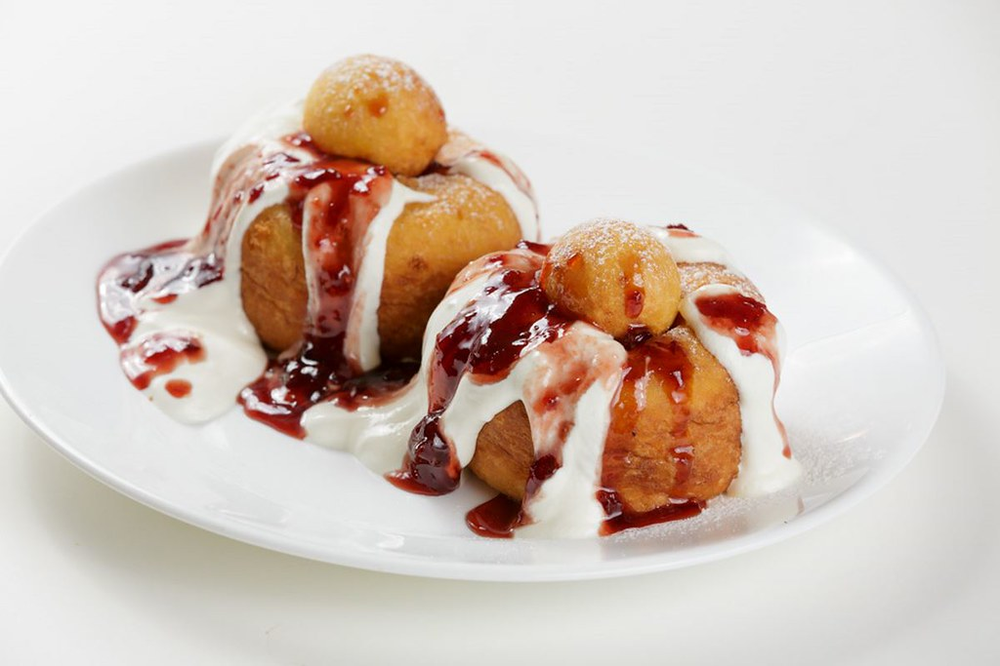

Home
Papanasi
They are a typical Romanian dessert, basically cheese doughnuts.
You can fry them like in this recipe or boil them and serve them coated with sugared breadcrumbs.
Ingredients
- Cottage Cheese
- Flour
- Sour cream
- Granulated sugar
- Vanilla sugar
- Baking soda
- Blueberry jam
Preparation Method
- Drain the excess water from the cottage cheese
- Blend the cottage cheese in a bowl. Add the eggs, the granulated, and vanilla sugar
- Mix about 230 g of the flour and baking soda. Add them to the cheese mixture. Mix with a spoon.
Turn the dough onto the floured surface and knead it lightly to form a ball.
- Divide the dough into 9 balls
- Only fry two or three papanasi at a time, depending on the size of your pan, do not overcrowd the pan;
the papanasi should be able to move around freely
- Serve warm topped with sour cream and blueberry jam. Place the little balls on top and top them with a bit of sour cream and jam as well.
